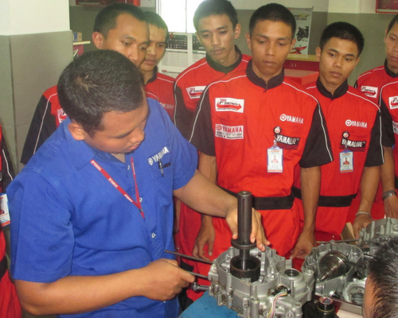
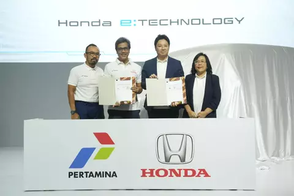

Profil
Pengalaman Kami
Leumpang Club bukan hanya sekadar komunitas motor biasa, tetapi sebuah entitas yang telah membentuk jejak yang kuat dalam dunia otomotif dan kebersamaan di Bandung. Dengan pengalaman bertahun-tahun, klub ini telah menjadi mitra terpercaya bagi Pemerintah Kota (Pemkot) sekitar dalam menyelenggarakan berbagai acara dan kegiatan kepemerintahan.
Kemitraan yang erat dengan Pemkot tidak hanya memperkuat posisi Leumpang Club dalam ranah otomotif, tetapi juga mengangkat klub ini sebagai agen perubahan sosial yang positif. Kerjasama dalam mengorganisir event besar seperti "Bandung Motor Festival" atau "Bandung Motor Show" menjadi bukti kontribusi nyata klub terhadap perkembangan pariwisata dan ekonomi kreatif di daerah ini.
Leumpang Club juga dikenal sebagai inisiator acara berkala seperti "Bandung Riders Gathering" yang menjadi magnet bagi ribuan pecinta motor dari berbagai penjuru. Keberhasilan acara-acara ini tidak hanya mencerminkan profesionalisme dan dedikasi klub dalam menyelenggarakan event berkualitas, tetapi juga menunjukkan kemampuan Leumpang Club dalam bekerja sama dengan pemangku kepentingan utama, termasuk Pemkot, untuk menciptakan pengalaman unik dan berkesan bagi seluruh peserta.
Pengalaman dan Kemitraan dengan Perusahaan Motor:
Leumpang Club tidak hanya menjadi kekuatan di dunia komunitas motor lokal, tetapi juga telah menjalin kemitraan strategis dengan beberapa perusahaan motor terkemuka, termasuk Yamaha dan Honda. Pengalaman klub dalam menyelenggarakan acara dan kegiatan motor telah dipercayakan oleh merek-merek terkemuka ini, menciptakan acara-acara yang mendebarkan dan berkualitas tinggi untuk para pecinta motor.

Kemitraan Bersama Yamaha:
Leumpang Club dengan bangga telah menjadi mitra terpercaya Yamaha dalam menyelenggarakan berbagai kompetisi motor yang menarik. Dengan dukungan Yamaha, klub ini berhasil menciptakan ajang balap dan acara modifikasi motor yang tidak hanya memacu adrenalin para peserta, tetapi juga menjadi pusat perhatian bagi para penggemar motor di wilayah Bandung.

Inovasi Bersama Honda:
Kemitraan dengan Honda tidak hanya sebatas pada acara balap, tetapi juga mencakup kegiatan inovatif seperti workshop teknis, pelatihan berkendara aman, dan kampanye keselamatan berkendara. Leumpang Club bersama Honda berkomitmen untuk meningkatkan pengetahuan dan keterampilan para penggemar motor, menciptakan lingkungan berkendara yang lebih aman dan bertanggung jawab.
Kelebihan Kami
| 1. |
Semangat Persaudaraan yang KuatKlub ini menciptakan lingkungan yang ramah dan mendukung, di mana setiap anggota merasa diterima dan memiliki peran penting dalam keluarga besar Leumpang. |
|---|---|
| 2. |
Kontribusi Positif pada KomunitasMelalui kegiatan sosial, bakti sosial, dan partisipasi dalam berbagai aksi kemanusiaan, klub ini terus memberikan dampak nyata bagi yang membutuhkan. |
| 3. |
Keterlibatan Aktif dalam Event OtomotifKlub ini memiliki keunggulan dalam mengorganisir dan berpartisipasi aktif dalam event otomotif. Dengan menghadirkan konsep acara yang kreatif, menarik, dan informatif, Leumpang Club menjadi magnet bagi para pecinta motor dan peminat otomotif di setiap kesempatan. |
| 4. |
Jejak Sukses dalam Kerjasama dengan PemerintahSebagai mitra yang terpercaya, klub ini memiliki kemampuan untuk merencanakan, menyelenggarakan, dan mendukung acara berskala besar yang melibatkan komunitas motor dan masyarakat luas. |
| 5. |
Fasilitas dan Layanan BerkualitasLeumpang Club tidak hanya menjadi tempat berkumpul, tetapi juga menyediakan fasilitas dan layanan berkualitas tinggi dengan dedikasi yang tinggi beserta sejumlah tenaga profesional yang berpengalaman |